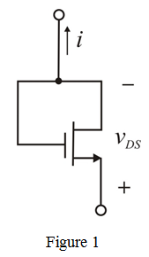
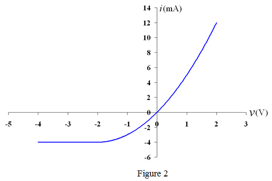

Refer to Figure P5.123 in the textbook for the depletion-type NMOS transistor.
From the circuit, the gate to source voltage is,
The threshold voltage  is negative. Hence, .
is negative. Hence, .
Refer to Figure P5.123 in the textbook for the depletion-type NMOS transistor.
From the circuit, the gate to source voltage is,
The threshold voltage is negative. Hence, .
For , the condition is,
Since , transistor is operating in the triode region and the equation for drain current is,
Replace for ,  for
for  in the equation.
in the equation.
For , the condition is,
Hence, transistor is operating in saturation region and current flows in reverse direction.
Source acts like drain and drain acts like source. Therefore, source and gate are short circuited and .
The resultant circuit configuration is shown in Figure 1.

The equation for drain current is,
Replace  for
for  in the equation.
in the equation.
Therefore,  relationship is,
relationship is,
The parameters are,
and
Substitute  for
for  and for in drain current equations for .
and for in drain current equations for . 
Substitute for  and for
and for  in drain current equations for .
in drain current equations for .
The relationship plot is shown in Figure 2.
